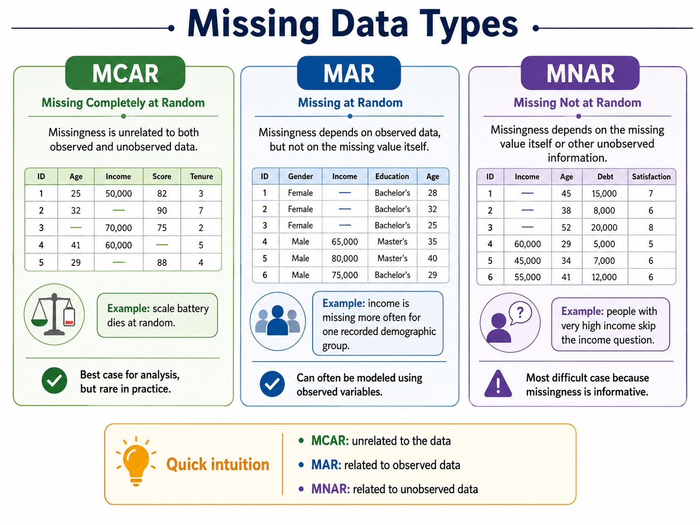

02 Data Quality#
We should be suspicious of any dataset (large or small) which appears perfect.
— David J. Hand
Big Idea#
Data cleaning is not just about fixing errors. It is about understanding what the data represents, how it was collected, what may be missing, and which decisions are justified before analysis begins.
A dataset may contain missing values, inconsistent categories, incorrect types, impossible measurements, duplicate records, or observations that are unusual but still valid. Some problems are easy to detect. Others require knowledge of the domain, the data-collection process, and the intended analysis.
This makes data preparation one of the most important stages of the data science lifecycle.
Data preparation can be divided into two related activities:
Data cleaning: modifying raw data so that values are correctly formatted, interpretable, and unambiguous
Preprocessing: modifying clean data to meet the requirements of a particular statistical or machine learning method.
2.1 Data Is Never Just Data#
A value in a dataset does not exist independently of the process that produced it.
Before changing a dataset, a data scientist should understand:
where the data came from,
how observations were collected,
what each variable represents,
what units were used,
which values are theoretically possible,
whether any special codes were used during data collection
This information is part of the data provenance.
2.2 What Makes Data “Messy”?#
Why context matters#
Note
Consider the following values:
a house sale month recorded as 13 a body temperature recorded as 1045 an organ donor count recorded as -10
These values are easy to flag because they violate obvious constraints.
Suppose the correct sale date of a house is March 15, but it is entered as May 15.
A value can be syntactically valid and still be incorrect.
Measurement context#
Some values can also be misinterpreted because of units or scaling.
Note
Consider:
population = 100
Does it mean:
100 people,
100 thousand people,
100 million people,
or an index value.
Without metadata or documentation, the number alone is ambiguous.
Important
Data quality depends not only on whether a value is valid, but also on whether it is plausible given the surrounding context.
Common Problemns#
Invalid values
Values that violate known constraints.
Improperly encoded missing values
Missing values are often represented using special codes: 999, -999, unknown, N/A, ?, declined
These values should usually be converted into an explicit missing-value representation NaN.
Inconsistent categories
The same category may appear in multiple forms: Yes, Y, 1
Incomplete observational units
Sometimes the problem is not a missing value inside an existing row.
The entire row may be missing.
2.3 Missing Data: Not All Missingness Is the Same#
Missing data occurs when valid information is unavailable for one or more observations.

Fig. 3 Three types of Missing Data.#
Missing data is not always produced by the same process.
Understanding why values are missing matters because the mechanism behind the missingness can affect:
bias,
statistical inference,
model performance,
and the choice of an appropriate missing-data strategy.
Rubin’s missing-data taxonomy distinguishes three common mechanisms:
Missing Completely at Random, or MCAR
Missing at Random, or MAR
Missing Not at Random, or MNAR
MCAR: Missing Completely at Random#
Data is Missing Completely at Random (MCAR) when the probability of a value being missing is unrelated to both observed and unobserved information.
An example might be a small number of records lost because of a random technical failure during data transfer.
MAR: Missing at Random#
Data is Missing at Random (MAR) when the probability of missingness depends on information that has already been observed.
Suppose some survey respondents are more likely than others to skip an income question.
MNAR: Missing Not at Random#
Data is Missing Not at Random (MNAR) when the probability of missingness depends directly on the missing value itself or on information that has not been observed.
People with particularly high or low income, strong opinions, or sensitive experiences may be more likely to avoid answering related questions.
MNAR is especially challenging because the information needed to explain the missingness may itself be unavailable.
Comparing MCAR, MAR, and MNAR#
Missingness Type |
What influences whether the value is missing? |
Example |
|---|---|---|
MCAR |
Something unrelated to the observed or missing values |
A scale battery fails randomly |
MAR |
Information that has already been observed |
A scale fails more often on soft surfaces |
MNAR |
The missing value itself or unobserved information |
A scale fails for very heavy objects |
A useful way to think about the three mechanisms is:
MCAR → missingness is unrelated to the data
MAR → missingness is related to observed data
MNAR → missingness is related to unobserved data
Missingness Is Rarely Known With Certainty#
In real-world projects, analysts usually cannot prove that data is MCAR, MAR, or MNAR simply by examining the dataset.
Instead, they use:
domain knowledge,
knowledge of the data-collection process,
documentation and codebooks,
observed patterns of missingness,
and relationships between missingness and other variables.
Note
Suppose customer ratings are frequently missing for cancelled food-delivery orders.
That pattern may suggest that the missing ratings are related to the observed variable:
order_status
This would lead the analyst to investigate whether the missingness is systematic rather than completely random.
The main goal is not to assign a label mechanically.
The goal is to understand whether missingness may carry information and whether it could influence downstream conclusions.
Missing Values Can Be Informative#
A missing value is not always simply an absence of information.
Sometimes the fact that a value is missing can itself tell us something about the data-generating process.
For example:
rating = NaN
order_status = Cancelled
A missing rating may make sense because the customer never received the order.
Similarly:
income = NaN
may mean:
the question was skipped,
the respondent refused to answer,
the value was not collected,
or the value was not applicable.
These situations should not automatically be treated as equivalent.
Understanding the meaning of missingness is part of understanding the data itself.
Key Takeaways#
Missing data can occur at the item, scale, or observational-unit level.
A missing row is different from a missing value inside an existing row.
MCAR means missingness is unrelated to observed and unobserved values.
MAR means missingness is related to information that has already been observed.
MNAR means missingness is related to the missing value itself or other unobserved information.
The true missingness mechanism is often uncertain.
Domain knowledge and information about data collection are essential when interpreting missingness.
Missingness can sometimes contain useful information rather than simply representing an error.
References#
This module draws on selected research articles, open educational resources, and professional documentation.
Rubin, D. B. (1976). Inference and missing data. Biometrika, 63(3), 581–592.
van Buuren, S. Flexible Imputation of Missing Data.
https://stefvanbuuren.name/fimd/Barter, R., & Yu, B. Veridical Data Science. Chapter 4: Data Cleaning.
https://vdsbook.com/04-data_cleaning